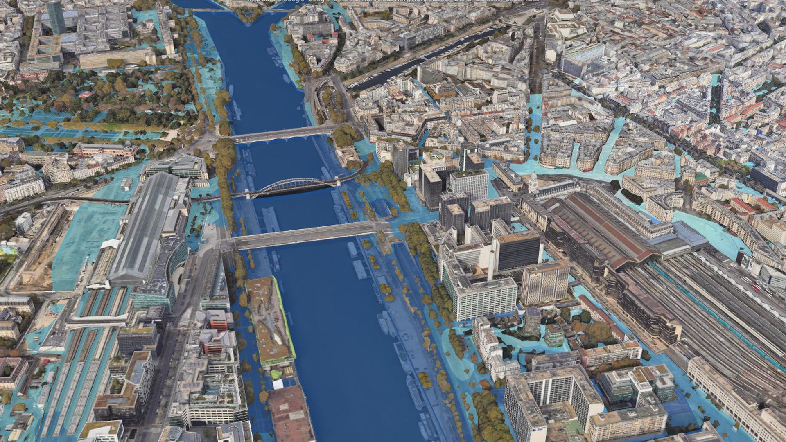
Google Maps · Photorealistic 3D Tiles · Map data ©Google · Data SIO, NOAA, U.S. Navy, NGA, GEBCO · IBCAO · Landsat / Copernicus
JANUARY 1910 · PARIS
8.62 m
the Seine at the Austerlitz gauge
What would it mean for your street?
If 1910 happened today · OECD estimates
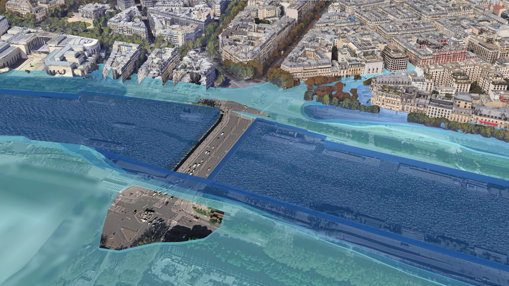
Google Maps · Photorealistic 3D Tiles · Map data ©Google · Data SIO, NOAA, U.S. Navy, NGA, GEBCO · IBCAO · Landsat / Copernicus
MEET
The stone soldier Parisians read the floods on.
Now he talks.
Any address · official data only
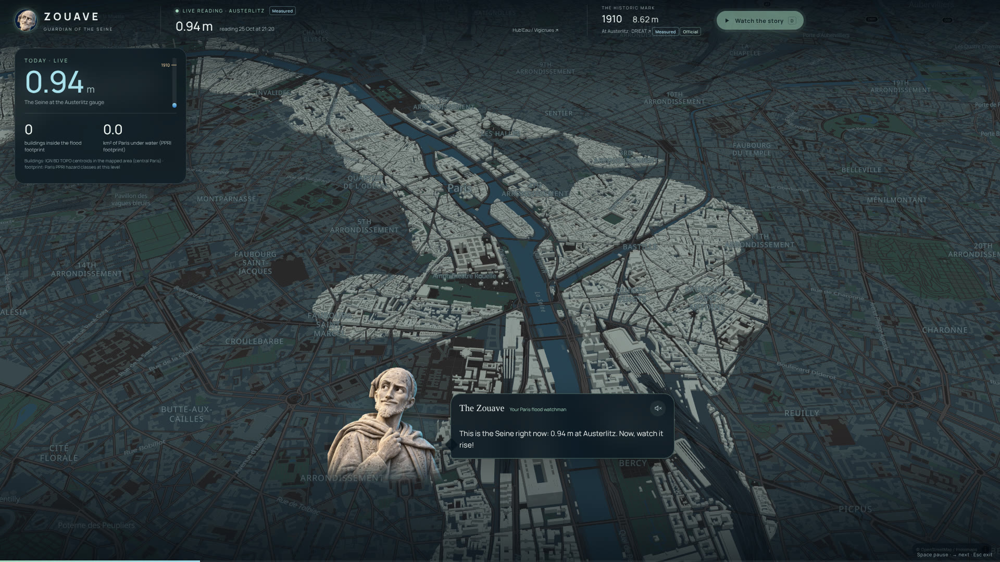
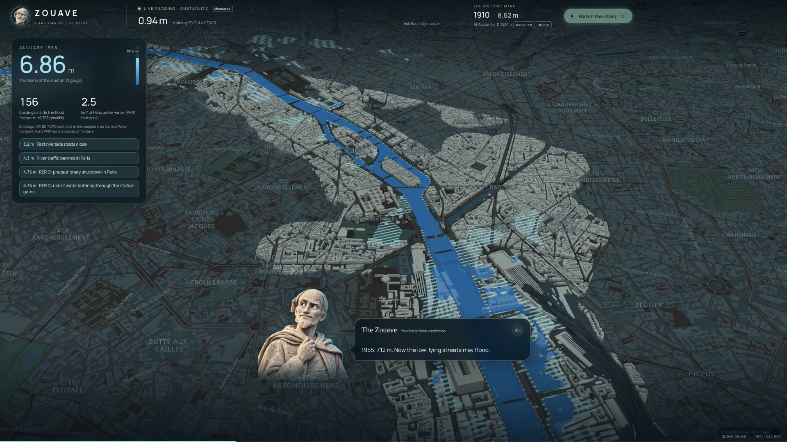
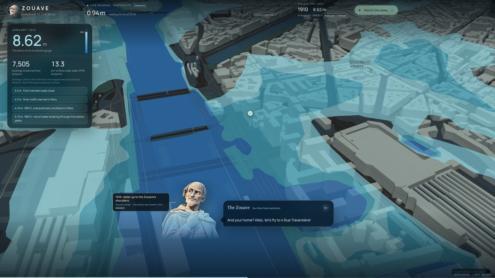
Google Maps · Photorealistic 3D Tiles · Map data ©Google · Data SIO, NOAA, U.S. Navy, NGA, GEBCO · IBCAO · Landsat / Copernicus
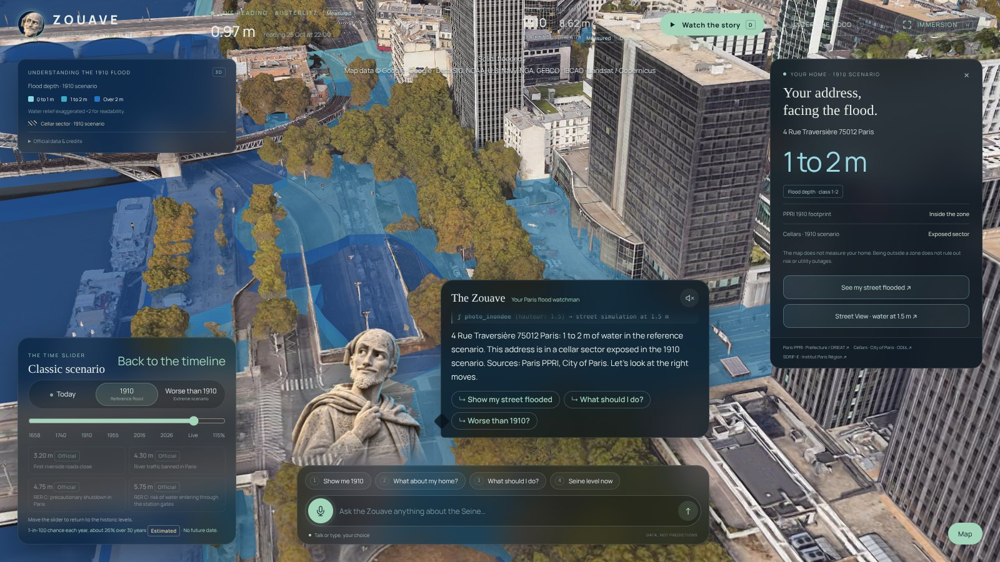
Google Maps · Photorealistic 3D Tiles · Map data ©Google · Data SIO, NOAA, U.S. Navy, NGA, GEBCO · IBCAO · Landsat / Copernicus
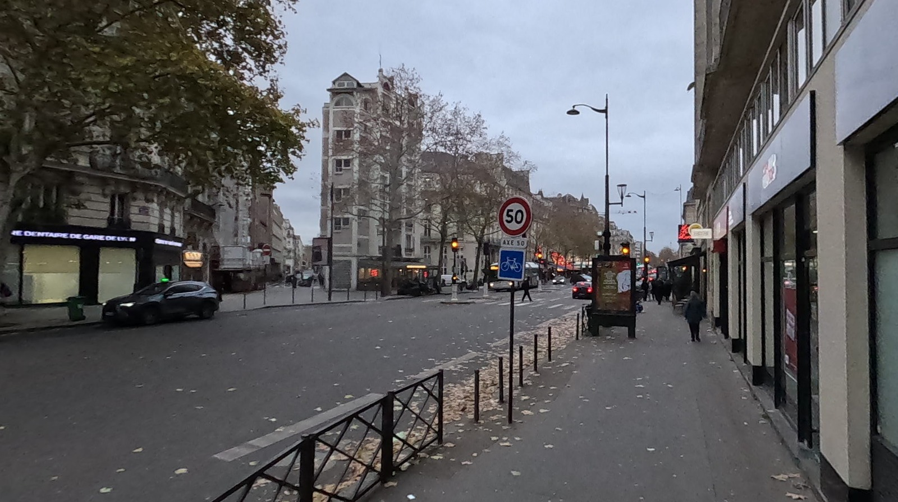
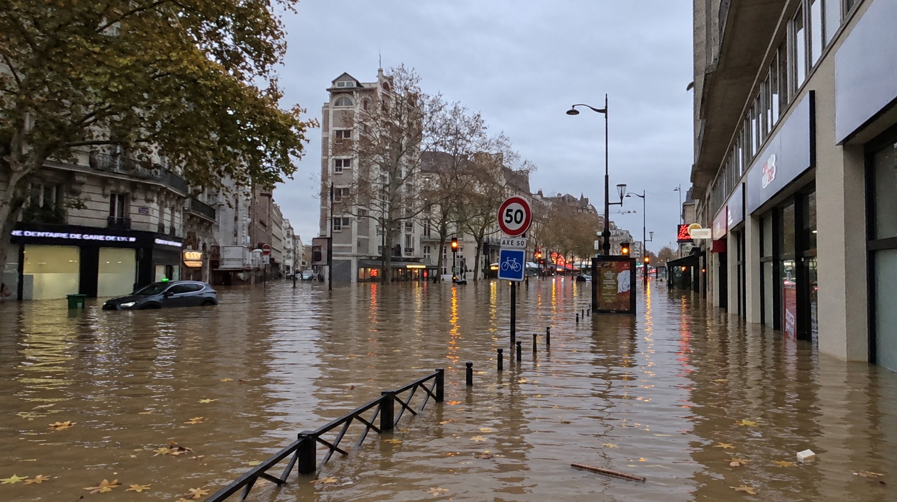
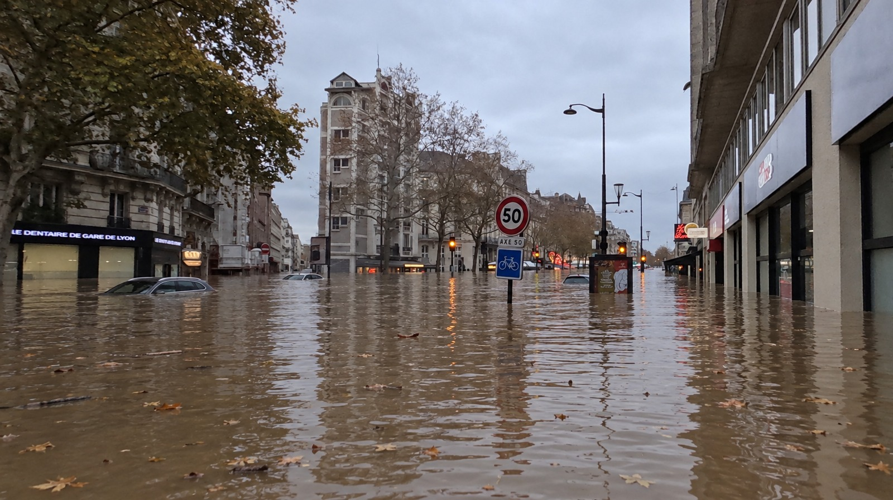
Flood: OpenAI image edit · Photo: Lejun / Panoramax, CC BY-SA 4.0
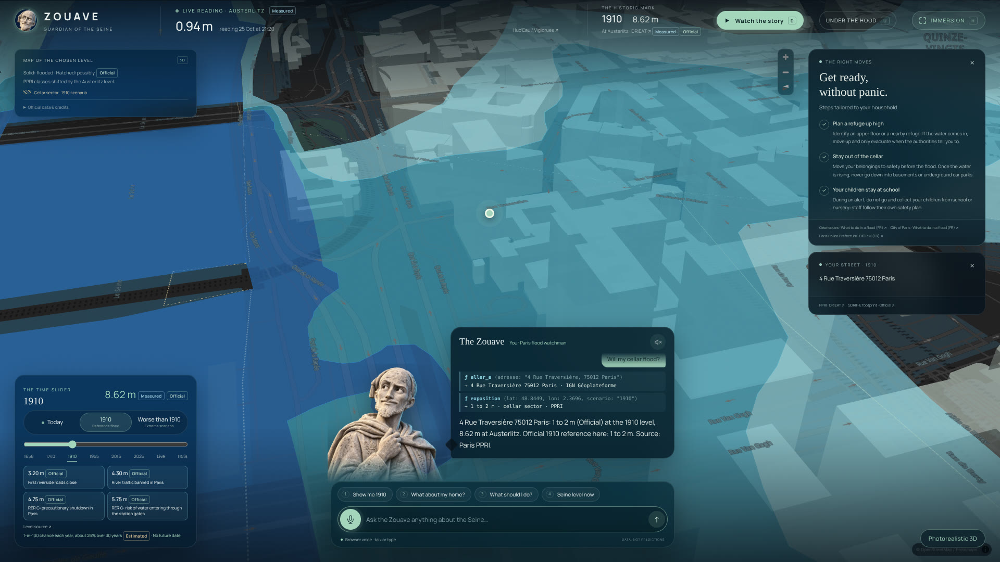
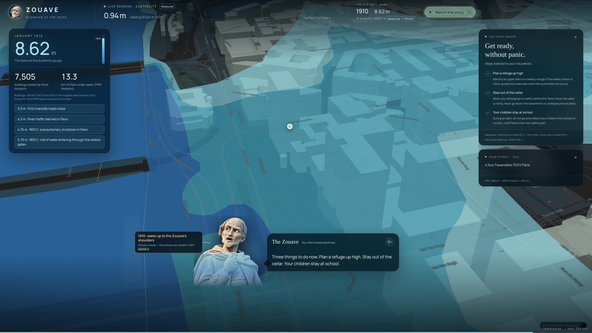
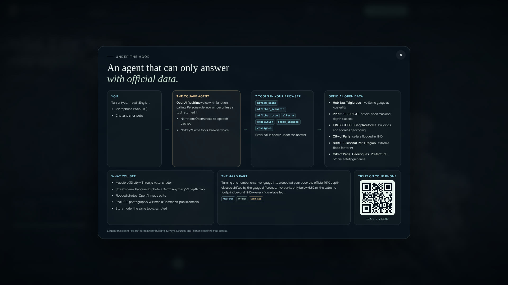
See your flood before it comes.
ZOUAVE
January 1910. The Seine rises to eight point six two metres in Paris.
If it happened today:
up to five million people hit.
Up to thirty billion euros of damage.
And most Parisians have no idea what it would mean for their street.
Bonjour! I'm the Zouave,
the stone soldier of the Alma bridge.
For generations, Parisians have read the floods on my body.
Now, I talk. Ask me about any address,
and I show you your flood,
with official data only.
Watch. Here is the Seine today.
Now it rises! 2016:
the quays close, the trains stop.
1910: thousands of buildings in the flood zone.
Up to my shoulders!
And your home? Four,
rue Traversière: one to two metres of water.
This is your street.
A simulation, not a forecast.
Talk to me, or type.
Every answer shows the tools I called:
the live gauge, the official flood map,
the safety advice. I never invent a number.
Under the hood: an OpenAI Realtime voice agent with function calling,
French open data, a Three.js city,
and my French accent by ElevenLabs.